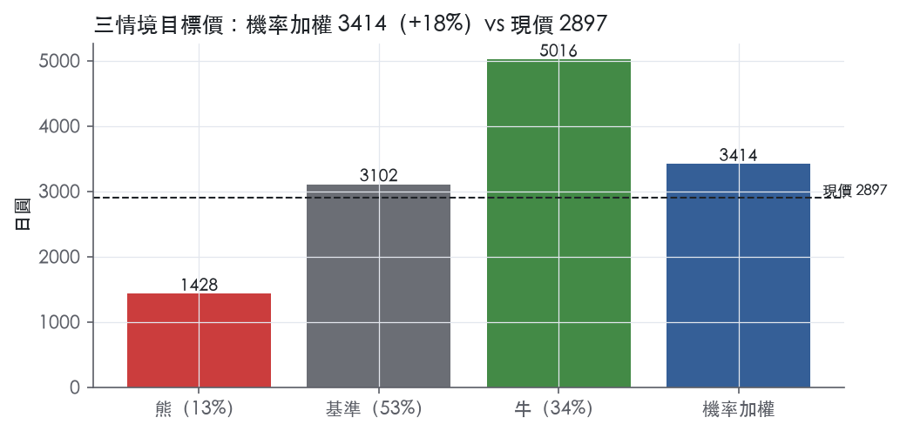
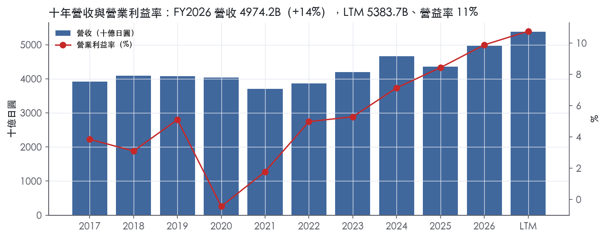
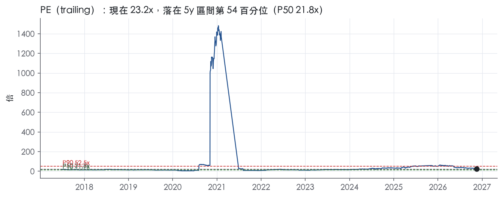
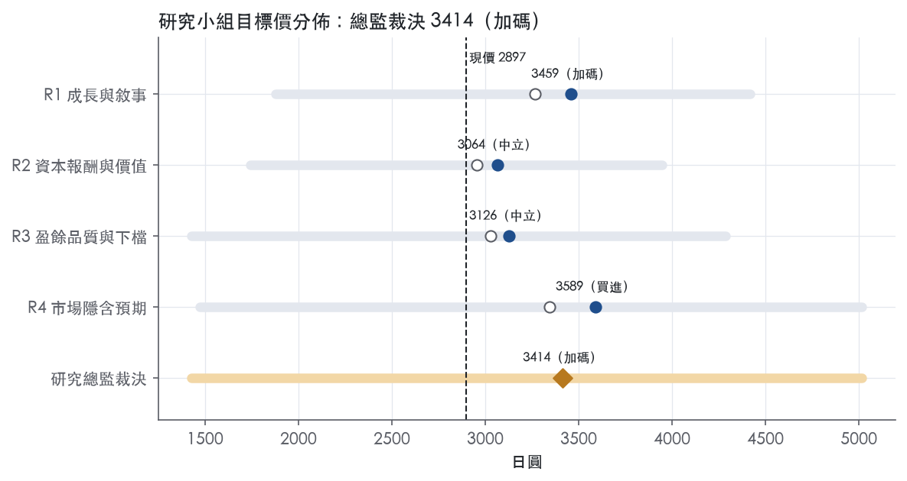
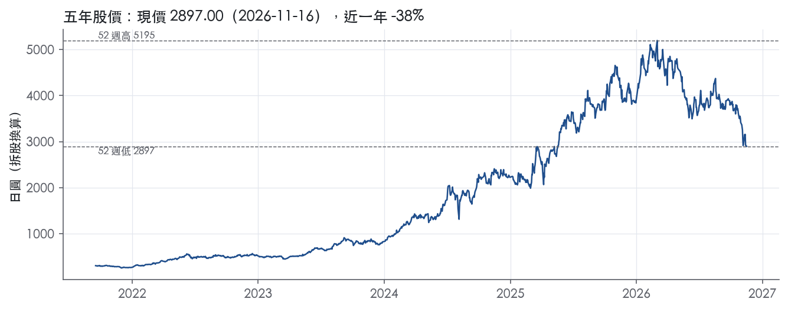

評等總表 › 未分類 › 7011.T
訂單撐盈餘、跌深後右尾未定價，看多｜評等 加碼｜目標價 3414
| 報告日 | 評等 | 目標價 | 當時股價 | 超額報酬 |
|---|---|---|---|---|
| 2026-11-16 | 加碼 | 3,414 | 2,897 | +10.9% |
| 評等 | 加碼 |
| 12 個月目標價 | 3414 日圓 |
| 現價 | 2897.00 日圓（2026-11-16） |
| 預期報酬 | 股價 +17.8%＋股息 0.9%＝總報酬 +18.8%；日股門檻 7.8%，超額 +10.9% |
| 估值方法 | P/E 19.0x，套在第 5–8 季的EPS（也就是一年後的未來四季） |
| 三情境 | 熊 1428／基準 3102／牛 5016 |
| 研究流程 | 四位研究員兩輪辯論＋研究總監裁決 |
| 資料來源 | EDINET、TDnet、J-Quants、Yahoo、FRED（全免費） |
訂單撐盈餘、跌深後右尾未定價，看多（研究總監裁決，四位研究員兩輪辯論後）
評等 加碼｜12 個月目標價 3414 日圓（總監三情境機率加權 3535 與研究員中位數 3292 各半）｜現價 2897.00（2026-11-16）
預期報酬：股價 +17.8%＋股息 0.9%＝總報酬 +18.8%。日股門檻 7.8%，超額 +10.9%。
估值方法：P/E 19.0x，套在第 5–8 季的EPS（也就是一年後的未來四季）。三情境：熊 1428（13%）／基準 3102（53%）／牛 5016（34%）。
評等說明：研究總監自己的機率加權目標價 3535 日圓對應「買進」；與研究員第二輪中位數 3292 日圓各半後為 3414 日圓，落入「加碼」。兩者只差一級，請把這檔讀成「買進～加碼」，正文裡總監的立場文字以「買進」寫成。
什麼會讓研究總監改變看法：2027-02 Q3短信若揭露非流動引当金屬澳洲巡防艦或GTCC的損失撥備、或全年計畫因非時點因素下修，熊機率上調至25%以上、倍數降到16x並轉中性；若工業解決方案利益率追上能源水準且計畫上修，上調y2營益率至12%。
| 過去四季（實際，FY2027Q2） | 未來四季 | 第 5–8 季 | 第 9–12 季 | |
|---|---|---|---|---|
| 營收（B） | 5,383.7B | 6,083.6B | 6,631.1B | 7,095.3B |
| 營收成長 | 19.5% | 13.0% | 9.0% | 7.0% |
| 營業利益率 | 10.8% | 10.8% | 11.2% | 11.5% |
| EPS（日圓） | 125.11 | 143.58 | 163.26 | 179.59 |
| EPS 成長 | 66.0% | 14.8% | 13.7% | 10.0% |
| 每股股息（日圓） | — | 0.00 | 0.00 | 0.00 |
| P/E（現價） | 23.2x | 20.2x | 17.7x | 16.1x |
| 股息殖利率（現價） | 0.9% | — | — | — |
過去四季為申報數字；預測為研究總監的假設、程式計算。倍數與殖利率都用現價計算，用來看現價對應各期獲利的高低。
| 情境 | 機率（歷史） | 故事 | 未來四季營收成長 | 第 5–8 季營益率 | 倍數 | 目標價 | 股價漲跌 |
|---|---|---|---|---|---|---|---|
| 熊 | 13%（11%） | 對應風險表第1條：澳洲巡防艦或GTCC延誤轉為大口赤字案件（有報事業等のリスク③），加第3條供應鏈延誤，固定成本去槓桿、預收倒流，倍數退回舊體質帶 | 6.0% | 8.5% | 13.0x | 1428 | -50.7% |
| 基準 | 53%（55%） | 契約負債撐住兩年成長但產出端限制加速，利潤率隨組合緩升到11.2%，前瞻倍數略降 | 13.0% | 11.2% | 19.0x | 3102 | 7.1% |
| 牛 | 34%（35%） | 伸長事業組合推升利潤率，2027-02 Q3短信上修計畫，日圓走160路徑；25x仍低於帶P75 | 16.0% | 13.0% | 25.0x | 5016 | 73.1% |
目標價由程式依研究總監的驅動與倍數計算；機率由研究總監給定。括號內是歷史頻率：把這檔股票過去十年 12 個月報酬的波動形狀，置中在基準情境，結果落在各情境附近的比例。

四位研究員用不同方法各自估值，回應研究總監的質疑後交出第二輪，最後由總監逐點裁決。各研究員的主張見第七章，裁決理由見第八章，完整論證見《研究底稿》。
| 立場（一輪→二輪） | 加權目標價（一輪→二輪） | 評等（一輪→二輪） | 第二輪倍數 | 熊～牛目標價 | |
|---|---|---|---|---|---|
| R1 成長與敘事 | 看多→看多 | 3266→3459 | 加碼→加碼 | 22.0x | 1875～4416 |
| R2 資本報酬與價值 | 中性→中性 | 2953→3064 | 中立→中立 | 20.0x | 1740～3946 |
| R3 盈餘品質與下檔 | 中性→中性 | 3028→3126 | 中立→中立 | 19.0x | 1428～4287 |
| R4 市場隱含預期 | 看多→看多 | 3345→3589 | 加碼→買進 | 19.0x | 1470～5016 |
| 研究總監裁決 | 看多 | 3414 | 加碼 | 19.0x | 1428～5016 |
目標價由程式依各自的驅動與倍數計算；評等＝機率加權總報酬 − 日股門檻。
三菱重工業是一家以能源、基礎設施、航空防衛為核心的多角化重工業集團，客戶以電力公司、政府／國防機構、航空公司、造船與重工業客戶為主。公司在多個事業中由三菱重工業本體及關係公司協同進行設計、製造、販售、服務及安裝。現行四大報告分部為能源（Energy）、工廠與基礎設施（Plant・Infra）、物流・冷熱・驅動系統（Logistics,Thermal & Drive Systems）、航空・防衛・宇宙（Aviation,Defense & Space）；2026年4月1日起，公司將物流・冷熱・驅動系統改組為「工業解決方案（Industrial Solutions）」，並把原本不屬任何分部的資料中心與能源管理業務併入其中。LTM營收5,383.72B日圓、EBITDA 700.76B日圓，是日本規模最大的重工業集團之一。
四大分部中，能源分部涵蓋火力發電系統（GTCC、蒸汽動力）、核能發電系統（輕水爐、核燃料循環、新領域）、風力發電系統、航空發動機、壓縮機、船用機械等；工廠與基礎設施分部涵蓋製鐵機械、商船、工程（交通系統、化學工廠）、環境設備、機械系統（紙工機械、ITS、試驗裝置）；物流・冷熱・驅動系統（重組後併入工業解決方案）涵蓋冷熱產品、發動機、渦輪增壓器、車用空調，重組後再加入資料中心與能源管理；航空・防衛・宇宙分部涵蓋民用飛機、防衛飛機、飛彈、艦艇、特殊機械（魚雷）、特殊車輛、宇宙機器。以FY2027H1（截至2026年9月30日的中間期）分部外部營收估算，能源867.7B、工廠與基礎設施384.5B、工業解決方案311.5B、航空防衛538.5B日圓，四分部合計約2,102.3B日圓。分部利益方面，前中間期能源80.8B、工廠與基礎設施44.6B、工業解決方案6.7B、航空防衛60.4B日圓，顯示航空防衛與能源是獲利引擎，工業解決方案利潤率明顯偏低。研究開發費用方面，FY2026全集團研發費用總額289,078M日圓，其中航空・防衛・宇宙分部佔185,418M日圓（約185.4B日圓），能源分部55,716M日圓（約55.7B日圓），顯示研發資源高度集中在航空防衛與能源兩大分部。
客戶結構以電力公司（關西電力、九州電力、東京電力控股、中部電力、東北電力、北海道電力、電源開發等）、鐵路公司（東海旅客鐵路、東日本旅客鐵路）、汽車（三菱自動車工業）為核心政策保有股對象，反映這些公司同時是重要交易夥伴。公司主要關係企業橫跨日本、美國、印度、英國、新加坡、泰國、中國、荷蘭等地，顯示海外生產與銷售布局廣泛，但10-K未揭露按地區拆分的營收比重。通路以直接對電力公司、政府機構、航空公司及造船客戶的大型專案承攬為主，而非零售或通路商模式。
FY2026Q4（截至2026年3月）營收1,647.19B日圓，年增102.5%，反映全年度大型專案集中認列。FY2027Q1（截至2026年6月）營收1,194.20B日圓，年增持平，淨利134.68B日圓創近八季新高。FY2027Q2（截至2026年9月）營收2,523,269M日圓（約2,523.27B日圓），年增較前期2,113,717M日圓（約2,113.72B日圓）成長約19%，事業利益（事業利益）249,304M日圓（約249.30B日圓），較前期171,572M日圓（約171.57B日圓）明顯改善，稀釋後每股中間利益60.47日圓，較前期34.20日圓大幅成長。現金及約當現金期末餘額達1,706,718M日圓（約1,706.72B日圓），較FY2026期末1,334,874M日圓（約1,334.87B日圓）再增加。公司最新全年計畫（業績予想）：稅前利益600.00B日圓、歸屬母公司淨利440.00B日圓、每股盈餘130.91日圓。
公司在中期經營計畫「2024事業計畫」中設定「伸長事業」與「成長領域」為重點領域，推動「組合經營強化」、「技術與人才基盤強化」及「MISSION NET ZERO」。2025年5月提出新方針「高利益體質與成長投資的良性循環」，推動「全體最適」與「領域擴大」雙軸的「Innovative Total Optimization（ITO）」，目標FY2026（2026年3月期）「營收5,700B日圓以上」、「事業利益450.0B日圓以上（事業利益率8%以上）」、「ROE 12%以上」，公司表示已提前一年達成「事業利益率8%以上」與「ROE 12%以上」兩項目標。公司點名的伸長事業為GTCC與核能（能源分部）、防衛（航空防衛分部），因需求強勁訂單充足，重點在生產流程最適化與跨部門資源調度以確保履約品質與速度。成長領域則聚焦資料中心相關市場（因生成式AI、IoT需求增加而設備吃緊）、能源轉型（CO2回收、次世代地熱ORC等），公司將此類需求統稱「韌性基盤領域」並持續調整策略範疇。公司亦強調人才基盤強化與DX推動，包括AI技術傳承熟練技能、設計支援IT工具整合等，作為支撐生產力提升的配套措施。整體來看，三菱重工的成長故事是「傳統重工訂單（能源、防衛）滿載＋資料中心新興需求」雙軌並進，FY2027H1事業利益大幅優於去年同期顯示訂單履約與成本控制確實改善。風險在於工業解決方案分部（原物流冷熱驅動系統）利潤率明顯落後其他三個分部，重組能否真正帶來協同效益仍待驗證。公司全年計畫稅前利益600.0B日圓隱含H2需優於H1，是否保守仍需觀察後續短信修正。

三菱重工在集團層級評為「無」護城河：過去十年 ROIC 只有一年高於資本成本，我們沒有把握未來 5 年以上 ROIC 會持續高於資本成本。趨勢評為「變寬」：GTCC、核能、防衛三個伸長事業的優勢，正把集團 ROIC 推到十年新高；若再連續兩個年度高於資本成本，評級可上調為「窄」。
優勢集中在少數子事業，屬於局部的護城河，被集團內其他低報酬事業稀釋。
材料中找不到成本優勢與網路效應的證據，兩者不列入。
數字目前不支持任何護城河評級，這是評為「無」的主因。
與護城河主張衝突的數字
支持趨勢變寬的數字
不能直接採信的數字
只有一年數據越過門檻，不足以證明可以持久，因此維持「無」，不上調。
最大的侵蝕來源是需求週期與專案執行，而不是競爭者。
目標倍數相對同業應持平、不給溢價，因為集團 ROIC 十年只有一年高於資本成本，撐不起長期超額報酬的假設。現行 P/E 23.2x（band.pe 現在）已高於 10 年中位數 15.7x，市場已提前反映伸長事業的景氣，高倍數不應外推到超過現有訂單履約期間之後。若未來兩個年度 ROIC 持續高於資本成本，再上調為「窄」，並重新評估是否給予溢價。
| 指標 | 最新 | 十年平均 | 標準差 | 最低 | 最高 |
|---|---|---|---|---|---|
| ROIC | 11.5% | 6.2% | 3.6% | -0.5% | 11.5% |
| 毛利率 | 21.8% | 18.5% | 1.6% | 15.8% | 21.8% |
| 營業利益率 | 9.9% | 4.9% | 2.9% | -0.4% | 9.9% |
| FCF 利潤率 | 15.3% | 3.3% | 5.6% | -6.5% | 15.3% |
| ROE | 12.2% | 7.4% | 3.8% | -0.5% | 12.2% |
程式計算。資本成本代理值（10 年債＋5%）：10.1%；ROIC 平均減資本成本：-3.9%；ROIC 有資料的 9 年中，高於資本成本 1 年。
LTM 營業現金流／淨利 2.69x、自由現金流／淨利 2.32x，均遠高於綠燈門檻 1.00x／0.90x。應計比率 LTM -8.6%，近三年平均 -4.8%，遠優於紅燈門檻 5.0%，代表盈餘品質由現金而非應計項目支撐。唯一兩個黃燈（稀釋股數年變動、股利＋回購／淨利）源自十年平均被 FY2026 把三菱ロジスネクスト（現株式会社ロジスネクスト）出售並分類為非繼續事業的一次性效果拉偏，不是經常性盈餘操縱。
現金持續跟上、甚至超過盈餘。FY2026 全年營業現金流 942.62B 對淨利 332.13B，FY2027H1（中間期）營業活動によるキャッシュ・フロー 394.52B對中間利益 207.25B，現金流優於會計盈餘的型態延續到最新一期。有報 MD&A 說明 FY2026 營業現金流增加「主要是『税引前利益』の増加や受注拡大に伴う『契約負債の増減額』の増加等による」，代表現金流改善有基本面支撐（利潤＋訂單擴張帶來的預收款），而非一次性營運資金釋放。十年平均現金／淨利比為負值（-3.80x、-1.67x），這是因為 FY2018、FY2021 兩年淨利/現金背離較大所拖累，但近三年與 LTM 已完全翻正，顯示近期體質優於歷史均值。
這份決算短信沒有單獨列示非 GAAP 調整表，財報本身即為 IFRS「事業利益」（近似營業利益，已扣除 SG&A、含採用權益法損益、其他收益/費用）與「税引前利益」兩層結構，中間期事業利益 249.30B，稅前中間利益 263.21B，差額主要來自金融收益 20.68B扣金融費用 6.77B。有報 MD&A 指出 FY2026 非繼續事業（三菱ロジスネクスト業務）已從受注高、売上収益、事業利益及稅前利益中剔除，這是口徑調整而非盈餘灌水，剔除後數字更貼近繼續經營實質。中間期持份變動表顯示「株式報酬取引」（股權報酬交易）增加資本剩餘金 7.58B，規模相對淨利（207.26B）極小，SBC 成本可忽略【判，計分表 SBC／營收無資料但原文金額佐證影響輕微】。中間期現金流表「その他」項在投資及營業活動中出現較大負數（營業活動 △103.71B），這類雜項需留意是否含一次性稅款支付（法人所得税の支払額 △96.75B，同期大增），判斷為稅款時點差異、非持續性侵蝕現金的項目。
槓桿極低、流動性充裕，資本配置以回饋股東與再投資並重。淨負債／EBITDA LTM 為 -0.08x（淨現金狀態），近三年平均 1.02x、十年平均 2.53x，均遠優於 3.00x 紅燈。利息保障倍數 LTM 38.4x，十年平均亦達 12.6x，遠高於 8.00x 綠燈門檻。有報揭露 2026年3月31日有利子負債合計 515.73B，其中償還1年以內 90.61B、1年超 425.13B，期中進一步降至中間期總負債結構中社債、借入金及其他金融負債合計約 820.47B（流動 284.88B＋非流動 535.60B，決算短信資產負債表），顯示公司持續償還到期借款。現金及現金同等物中間期末達 1,706.72B，較前期 1,334.87B再增。財務政策明確說明優先用營業現金流，不足才舉債，並透過應收帳款與存貨壓縮改善資產效率，自己股買回視股價與業績狀況綜合判斷，非機械式進行，與東證要求改善資本效率的壓力方向一致但步調審慎。
計分表無紅燈，僅兩個黃燈，逐條回應如下。
稀釋股數年變動：LTM 與近三年均為 0.0%，十年平均卻達 -121.6%，這是因 FY2018 稀釋股數變動值異常（-0.35B，資料包年度表）造成的歷史期間資料扭曲，非近期稀釋或回購行為的訊號。近三年稀釋股數穩定在 3.36B（資料包年度表），代表公司沒有用股權稀釋灌水 EPS，也沒有激進回購，屬假警報。
（股利＋回購）／淨利：LTM 20.0%、近三年平均 26.1%，均低於 50.0% 綠燈門檻但未達紅燈（<0.0%），十年平均卻為 -20.5%，這同樣是歷史期間（如 FY2018 淨利為負 -7.32B，資料包年度表）造成比率失真，而非近期舉債回饋股東的風險。中間期配當金支払額 43.68B對中間利益 203.29B比例溫和，資本配置保守，無「透過舉債發股利」的跡象。
盈餘品質高，估值可直接用 GAAP／IFRS 揭露的事業利益與稅前利益，不需要額外打折，LTM P/E 23.2x、EV/EBITDA 13.8x 已反映在歷史分位偏高區間（5年分位 53.5%／ev_ebitda 無分位資料），這是市場對高現金轉換與淨現金資產負債表給的溢價，合理。槓桿處於淨現金狀態（淨負債／EBITDA -0.08x）不構成倍數限制，反而給估值區間上緣留出空間，若公司全年計畫（稅前利益 600.00B、歸屬母公司淨利 440.00B、EPS 130.91）能如期達成，目前股價隱含的成長假設並不激進。
| 項目 | LTM | 近三年 | 十年 | 燈號 | 規則 |
|---|---|---|---|---|---|
| 營業現金流／淨利 | 2.69x | 2.16x | -3.80x | 綠 | ≥1.00x 綠、<0.80x 紅 |
| 自由現金流／淨利 | 2.32x | 1.41x | -1.67x | 綠 | ≥0.90x 綠、<0.60x 紅 |
| 應計比率（(淨利−CFO)／平均總資產） | -8.6% | -4.8% | -3.9% | 綠 | ≤0.0% 綠、>5.0% 紅 |
| SBC／營收 | — | — | — | — | ≤3.0% 綠、>8.0% 紅 |
| 淨負債／EBITDA | -0.08x | 1.02x | 2.53x | 綠 | ≤1.50x 綠、>3.00x 紅 |
| 利息保障倍數（營業利益／利息） | 38.4x | 23.9x | 12.6x | 綠 | ≥8.00x 綠、<3.00x 紅 |
| 稀釋股數年變動 | 0.0% | 0.0% | -121.6% | 黃 | ≤0.0% 綠、>3.0% 紅 |
| （股利＋回購）／淨利 | 20.0% | 26.1% | -20.5% | 黃 | ≥50.0% 綠、<0.0% 紅 |
程式計算；燈號以 LTM（無則近三年平均）判定。
| 風險 | 觸發指標（看什麼數字、在哪裡看） | 對 EPS 的影響方向與粗略幅度 | 未來 12 個月發生機率（高／中／低） | 出處 |
|---|---|---|---|---|
| 專案履約風險（性能未達、工期延遲、大口赤字案件）導致個案損益大幅轉差 | 各分部事業利益率在決算短信季度變化；有無新增「大口赤字案件」揭露 | 方向：負；過去FY2021因個案虧損營益率降至1.8%、EBITDA僅205.00B，幅度屬大 | 中 | ③製品・サービス等に関するリスク |
| 工業解決方案分部重組（含資料中心、能源管理）利潤率明顯落後其他分部，整合效益未如預期 | 工業解決方案分部利益率（決算短信分部表）相對能源、航空防衛分部利益率的差距 | 方向：負；前中間期工業解決方案分部利益僅6.7B，相對能源80.8B、航空防衛60.4B，差距懸殊 | 中 | ＋ |
| 供應鏈與特定材料・零組件供應商集中（替代性有限、供應商被收購或倒閉） | 棚卸資產與契約資產增減幅度（CF表「棚卸資産及び前渡金の増減額」）；交期延遲公告 | 方向：負；FY2027H1棚卸資産及前渡金增減額為負252,608M（現金流出），顯示庫存與在製品壓力加大 | 中 | ③製品・サービス等に関するリスク |
| 國內製造業人才基盤弱化（技術斷層、海外人才獲取困難） | 研發費用成長率、資深工程師流失率（公司未定期揭露具體指標） | 方向：負；長期侵蝕競爭力，短期難量化 | 低 | ①イ．モノづくり産業基盤の弱体化 |
| 法令遵循風險（獨占禁止法、賄賂相關法規、貿易・外匯法規、建設業法違反） | 有無當局調查、課徵金、營業停止等公告；訴訟揭露 | 方向：負；一次性重大裁罰可直接衝擊當期淨利，幅度不可預先量化 | 低 | ⑥法令等の違反等に関するリスク |
專案履約風險是三菱重工最核心的風險，公司自己在10-K中點名「製品等の性能・品質・納期の問題」、「仕様変更や工程遅延等に起因するコスト悪化」及「過去に生じた大口赤字案件」是主要管理對象。這不是抽象描述，公司歷史上已實際發生過：FY2021營益率僅1.8%、EBITDA大跌至205.00B日圓，遠低於前後各年（FY2019 343.88B、FY2022 324.33B），顯示單一或少數大型專案虧損足以把全年利潤打掉大半。監測方法是每季看各分部事業利益率是否突然下滑，以及決算短信是否新增「特別損失」或個案減損揭露。
工業解決方案分部利潤率偏低是公司2026年4月才完成的組織重組（將物流・冷熱・驅動系統＋資料中心＋能源管理合併為「Industrial Solutions」）帶來的新風險。前中間期可比數字顯示該分部（重組前的物流冷熱驅動系統）分部利益僅6.7B日圓，與能源80.8B、航空防衛60.4B相比差距極大。資料中心業務雖是公司點名的「成長領域」，但若資本支出與營運費用先行而營收認列滞後，會拖累集團整體利潤率，進而影響市場對公司「事業利益率8%以上」目標可持續性的信心。監測指標是每季決算短信的分部別利益表，看工業解決方案分部利益率是否追上能源、航空防衛的水準。
供應鏈與關鍵零組件集中風險在10-K中明確提到「代替性の限られる特定の材料・部品のサプライヤー等が競合他社に買収されたり、倒産・廃業したりした場合に代替調達先を手配できない」的風險。FY2027H1現金流量表顯示棚卸資産及前渡金增減額為負252,608M（即現金流出增加252.6B），較前期負139,716M明顯擴大，反映公司為應對交期不確定性而提高庫存與在製品水位，這會壓縮營運資金效率並可能預示交期壓力上升。監測指標是每季CF表中棚卸資産與契約資産的增減幅度，以及是否出現交期延遲的公開揭露。
人才基盤弱化是公司在「外部環境の変化」章節中明確列出的中長期結構性風險，原因包括人口減少、少子高齢化、円安導致國內優秀人才流出與海外招募困難，以及年輕人遠離製造業造成工學系學生減少①イ。這類風險無法在單一季度量化反映，但公司已承認「人材不足等がモノづくり産業基盤の弱体化を引き起こし、当社グループの競争力が低下した場合」會有重大影響，故仍列入觀察但發生機率評為低，因影響是漸進式而非突發式。
法令遵循風險公司特別點名独占禁止法、贈賄関連法規、貿易・為替法規、建設業法、中小受託取引適正化法等違反，一旦發生「当社グループへの影響は一層重大なものとなる可能性がある」⑥。由於三菱重工業務涵蓋國防、核能等高度受監管領域，此類風險一旦兌現通常是非線性的大額罰款或業務停止，但基期機率低，故列第五位。
現價 2897.00 對應 trailing（過去四季）P/E 23.2x、EV/EBITDA 13.8x、EV/EBITA 16.8x、EV/Sales 1.8x、FCF 殖利率 10.0%。主要估值倍數 P/E 現在 23.2x，落在5 年區間第 54 百分位（P10／P50／P90 = 11.7x／21.8x／52.5x）。

把程式的機械基準預測放到現價下，市場付的前瞻倍數是：P/E（未來四季） 19.8x、P/E（第 5–8 季） 17.9x。反推 DCF 顯示市價隱含未來五年營收年成長 8.8%（WACC 9.0%、終值成長 3.0%、FCF 利潤率 7.5%，SBC 不加回）。
| 倍數 | 現在 | 5 年 P10 | 5 年 P50 | 5 年 P90 | 現在分位 | 全期 P50 |
|---|---|---|---|---|---|---|
| P/E | 23.2x | 11.7x | 21.8x | 52.5x | 53.5% | 15.7x |
| EV/EBITDA | 13.8x | — | — | — | — | 7.2x |
| EV/EBITA | 16.7x | 10.3x | 14.9x | 27.6x | 57.1% | 14.4x |
| EV/EBIT | 16.7x | 10.3x | 14.9x | 27.6x | 57.1% | 14.3x |
| EV/Sales | 1.8x | 0.6x | 0.8x | 2.6x | 77.4% | 0.6x |
| P/S | 1.8x | 0.4x | 1.0x | 3.0x | 67.0% | 0.4x |
| P/FCF | 10.0x | — | — | — | — | 16.3x |
trailing 倍數（股價 ÷ 過去四季）；分位以每個交易日計算。
（日股同業籃尚未建置：評等門檻用日股絕對門檻＝日本 10 年公債＋股權風險溢酬 5%，見首頁。）
事後實現前瞻倍數帶（P/E，2018-11-21..2025-11-19）：P10／P50／P90 = 7.5x／10.2x／34.7x。它是每個交易日的股價除以之後四季實際實現的指標；一年後，今天的第 5–8 季正是那時的未來四季，所以這條帶是 12 個月目標價的同口徑倍數。因為用的是事後實際而非當時預期，過去成長超乎預期的公司這條帶會偏低。
程式的機械基準（成長率從過去四季年增率三年收斂到 6%、利潤率持平）用 事後實現前瞻 P/E P50 估值得到 1653（-43.0%），市場現行前瞻倍數（現價 ÷ 基準 未來四季指標）一年後持平，套在基準 第 5–8 季指標得到 3206。這兩個數字只是參考點，不是本報告的目標價；研究員對這個定價的回應在第七章。
下表是每位研究員第一輪（各自獨立）與第二輪（回應研究總監的質疑後）的結果。目標價全由程式依各自的假設計算。
| 立場（一輪→二輪） | 加權目標價（一輪→二輪） | 評等（一輪→二輪） | 第二輪倍數 | 熊～牛目標價 | |
|---|---|---|---|---|---|
| R1 成長與敘事 | 看多→看多 | 3266→3459 | 加碼→加碼 | 22.0x | 1875～4416 |
| R2 資本報酬與價值 | 中性→中性 | 2953→3064 | 中立→中立 | 20.0x | 1740～3946 |
| R3 盈餘品質與下檔 | 中性→中性 | 3028→3126 | 中立→中立 | 19.0x | 1428～4287 |
| R4 市場隱含預期 | 看多→看多 | 3345→3589 | 加碼→買進 | 19.0x | 1470～5016 |
| 研究總監裁決 | 看多 | 3414 | 加碼 | 19.0x | 1428～5016 |
目標價由程式依各自的驅動與倍數計算；評等＝機率加權總報酬 − 日股門檻。
分歧度：第一輪 加權目標價 2953～3345（區間＝現價的 14%）· 倍數 19～22x · 立場 看多×2、中性×2；第二輪 加權目標價 3064～3589（區間＝現價的 18%）· 倍數 19～22x · 立場 看多×2、中性×2。

| 研究員 | 第二輪主張 | 堅持的理由 |
|---|---|---|
| R1 成長與敘事 | 偏多，給未來四季 EPS 22 倍，第二年營收成長 12%。 | 契約負債續增撐住成長，第二年營收成長高於其他三人。 |
| R2 資本報酬與價值 | 中性，給未來四季 EPS 20 倍，營益率回落到 10.5%。 | 現金流靠預收款墊高，盈餘接近峰值，不給平均以上倍數。 |
| R3 盈餘品質與下檔 | 中性，給第五到第八季 EPS 19 倍，熊情境機率 16%。 | 瓶頸在產出端，營收難以加速；熊情境股價可跌 51%。 |
| R4 市場隱含預期 | 溫和看多，給第五到第八季 EPS 19 倍，營益率升到 12.0%。 | 市場錯在利潤率，不在營收；不接受營益率持平。 |
每位研究員的逐條回應與完整論證見《研究底稿》（7011.T_研究底稿_2026-11-16.docx）。
| 分歧點 | R1 | R2 | R3 | R4 | 什麼資料會分出勝負 |
|---|---|---|---|---|---|
| NTM 營收成長（rev_growth_y1） | 15%：同口徑 H1 約 +19% 與日圓逆風抵銷 | 11% | 11%：產能瓶頸 | 13%：H1 成長扣日圓約 3% 逆風 | 2027-02 Q3 短信前九月累計營收年增；2027-05 全年實績 |
| Q5–Q8 營收成長（rev_growth_y2） | 12%：契約負債増減額 +429,221 百萬円 | 8% | 9%：棚卸資産流出擴大，瓶頸在產出端 | 9% | 2027-05 短信受注高／受注残高、FY2028 計畫 |
| Q5–Q8 營益率（op_margin_y2） | 11.2%：組合移向能源／防衛 | 10.5%：峰值均值回歸 | 10.8%：基準 | 12.0%：市場錯在利潤率 | 2027-02 Q3 短信分部利益表：工業解決方案對能源／航空防衛的利益率差距 |
| 目標倍數 | 22x ntm（持平 -5%） | 20x ntm（-14%） | 19x q5_q8（-4%） | 19x q5_q8（-4%） | 2027-05 FY2027 ROIC 是否連續第二年高於 10.1% |
| 熊機率／深度 | 15%／-42% | 16%／-38% | 16%／-51% | 15%／-56% | 2027-02 Q3 短信非流動引当金註記是否連到澳洲巡防艦或 GTCC |
1. NTM 營收成長：選 R4，13%。 口徑更正後，繼續事業中間期營收 2,523,269 對 2,113,717 百萬円、契約負債半年由 2,161,881 升到 2,573,339 百萬円，成長是真的；但本行日本前提把日圓從 158.2 推到 153.0，對出口製造是約 3% 逆風，美國成長 1.8 低於共識也壓週期訂單。R1 留在 15% 等於假設逆風不留痕跡；R2、R3 的 11% 把產能瓶頸（棚卸資産及び前渡金 △252,608 百萬円）提前套在 NTM，但那筆備料正是為履約而增，影響落在 Q5 以後。研究部營收紀錄四人相近，分不出勝負，取證據鏈最完整的 R4。
2. Q5–Q8 營收成長：選 R3（R4 同值），9%。 R1 的 12% 靠契約負債，但公司自己說伸長事業「訂單充足，重點在生產流程最適化與跨部門資源調度以確保履約品質與速度」——限制在產出端。中間期有形固定資産及び無形資産の取得による支出 67,414 百萬円，低於前期 94,958 百萬円，產能擴張在放慢，撐不起第二年再加速。R2 的 8% 沒有公司特有證據，只是把基準往下壓。
3. Q5–Q8 營益率：選 R1，11.2%，y3 11.5%。 前中間期分部利益：能源 80.8B、航空防衛 60.4B，工業解決方案 6.7B（外部營收 311.5B），高利潤分部成長快、低利潤分部佔比降，方向確定。R4 的 12.0% 要 H1 約 9.9%（我第一輪 E4）在四到六季內升逾 2 個百分點，公司計畫隱含 H2 稅前約 336.8B（主要風險章）並未顯示那種跳升，當期分部表又被截斷。R2 回到 10.0% 引用十年平均 4.9%（護城河章量化底稿），但那包含 FY2021 營益率 1.8%這種專案虧損年，屬熊情境；研究部紀錄顯示 R2 的營業利益預測系統性偏低（誤差中位數 -4.8%），R4 最準（+0.2%、勝基準 74%），所以我在兩者之間偏 R1。NTM 營益率維持基準 10.8%：H1 約 9.9% 加季節性較強的 H2，已對應計畫小幅超越。
4. 目標倍數：選 R3／R4，19x eps@q5_q8。 市場持平倍數 19.8x，R1、R3、R4 都在持平下方 4%–5%（程式檢查表），理由一致且是個股因素：一年後市場看到的是 Q9–Q12 成長 7%，低於今天的 13%。R2 的 20x ntm 換算後低於持平 14%，理由「峰值盈餘不給平均以上倍數」與契約負債仍在累積的事實衝突——盈餘在上行，不在峰值。事後實現前瞻帶 P50 10.2x 是舊體質（FY2022 EPS 33.80 到 FY2026 98.84）的事後定價，P75 27.0x 是重估期定價；19x 在兩者之間、略低於持平，與護城河「無、趨勢變寬」及 ROIC 只有 FY2026 一年 11.5%高於 10.1% 相符。
5. 熊情境：own——取 R3 的路徑與 13x，機率 13%。 四人的熊都對應風險表第 1 條，分歧在深度與機率。R3 機制最完整：澳洲巡防艦或 GTCC 延誤→受注工事損失引当金→供應鏈（第 3 條）→契約負債停止增加、營業現金流回到 FY2023 的 80.89B；深度 -51% 有 FY2021 營益率 1.8% 的先例。機率不接受 R3／R4 的 15%–16%：非流動引当金由 54,905 升到 123,841 百萬円是唯一帶日期的偏熊證據，但性質未揭露，R1、R2 也承認撐不起 5 個百分點，我只為它在歷史頻率上加 1–2 個百分點。
退回的第二輪漂移：無。 四人的變動不是我用事實更正逼出（R1 G1、R4 E3），就是依指示向歷史頻率靠（R2 V3、R3 Q2），程式未標記，R1、R4 反而遠離中位數。總經偏離：四人 macro_deviations 皆空；R1、R4 牛情境取日圓 160（本行日本下行路徑）、熊取 145（上行路徑），是出口商的正確對應，全部接受；R2、R3 第二輪已刪除以利率壓倍數的理由。
與機械基準不同的驅動：
其餘沿用基準。目標倍數 19x eps，期間 第 5–8 季，與事後實現前瞻帶同口徑：落在 P50 10.2x 與 P75 27.0x 之間，比市場持平 19.8x 低 4%，理由是 Q9–Q12 成長降檔與 ROIC 僅一年越線；trailing 帶的 5 年 P50 21.8x、10 年 P50 15.7x 只做交叉驗證。日股同業籃未建置，相對同業假設持平、不給溢價。
| 情境 | 機率 | 來源 | 驅動（營收／營益率） | 倍數 | 故事 |
|---|---|---|---|---|---|
| 牛 | 34% | R4 | 16／12／9%；12／13／13.5% | 25x | 伸長事業組合推升利潤率，2027-02 Q3 短信上修計畫，日圓走 160 路徑；25x 仍低於帶 P75 |
| 基準 | 53% | 總監 | 13／9／7%；10.8／11.2／11.5% | 19x | 訂單撐住兩年成長，利潤率隨組合緩升，前瞻倍數略降 |
| 熊 | 13% | R3 | 6／4／4%；8.0／8.5／9.0% | 13x | 風險表第 1 條：巡防艦或 GTCC 延誤成大口赤字案件，加第 3 條供應鏈延誤，預收倒流、倍數退回舊體質帶 |
選 R4 的牛不選 R1，因為我的基準把限制放在產出端，驚喜應來自價格與組合，不是 R1 的營收 19%／15%。機率從歷史出發：程式對照顯示 R4 的牛（比他的基準高 51%）落在牛區的歷史比例 36%、R3 的熊（-51%）為 12%；我的牛熊離基準的距離相近，牛取 34%、熊取 13%，熊只比歷史多 1–2 個百分點（引当金證據）。牛高於熊，與置中分布 P75 +48%、P10 -33% 的右偏一致，也是對研究部 22 份報告全數熊高於牛的修正。
現價對基準預測付 19.8x NTM、17.9x Q5–Q8，反推 DCF 隱含五年營收成長 8.8%——成長軸市場大致對；差距在利潤率軸：市場定價等於 10.8% 持平，我們認為組合效果把 Q5–Q8 推到 11.2%，而且右尾（計畫上修、GTCC 加單）沒有被一年 -37.7% 的跌幅定價。立場看多，與評等一致，但來源要說清楚：基準情境的總報酬只在 7.8% 門檻附近，看多來自分布不對稱——股價在 52 週低點 2897、淨現金、契約負債仍在累積，下檔由資產負債表托住，上檔是歷史分布中約三分之一機率的右尾。
現價 2897.00 → 點估目標價 3102 → 機率加權目標價 3535 → 目標價 3414，差距拆成五段：成長順延 +309 日圓（市場現行倍數 19.8x 一年後持平、獲利照機械基準）；倍數差 -133 日圓（總監倍數 19.0x vs 市場持平倍數 19.8x，同一機械基準預測）；盈餘差 +28 日圓（總監預測的第 5–8 季EPS 0.0B vs 機械基準 0.0B，同一倍數）；情境不對稱 +433 日圓（機率加權減點估）；研究小組平均 -121 日圓（總監機率加權 3535 與研究員第二輪中位數 3292 各半）。各段相加等於目標價減現價。本階段未接賣方共識，差距以市場隱含預期為對照。
| 驅動 | 機械基準 | 研究總監 | 差異 |
|---|---|---|---|
| 未來四季營收成長 | 15.0% | 13.0% | -2.0 pp |
| 第 5–8 季營收成長 | 10.5% | 9.0% | -1.5 pp |
| 第 9–12 季營收成長 | 6.0% | 7.0% | +1.0 pp |
| 未來四季營益率 | 10.8% | 10.8% | ＝ |
| 第 5–8 季營益率 | 10.8% | 11.2% | +0.4 pp |
| 第 9–12 季營益率 | 10.8% | 11.5% | +0.7 pp |
| D&A／營收 | 2.3% | 2.3% | ＝ |
| 資本支出／營收 | 2.9% | 3.5% | +0.7 pp |
| SBC／營收 | 0.0% | 0.0% | ＝ |
| 稅率 | 24.5% | 24.5% | ＝ |
| 股數年變動 | 0.1% | 0.1% | ＝ |
研究總監只寫偏移，未寫的沿用基準。
| 期 | 營收 | 成長 | 營益率 | 營業利益 | EBITDA | EBITA | 淨利 | EPS | FCF | 期末淨負債 |
|---|---|---|---|---|---|---|---|---|---|---|
| 未來四季 | 6,083.6B | 13.0% | 10.8% | 654.6B | 792.1B | 654.6B | 482.8B | 143.58 | 407.4B | -380.5B |
| 第 5–8 季 | 6,631.1B | 9.0% | 11.2% | 742.7B | 892.5B | 742.7B | 549.3B | 163.26 | 467.1B | -763.7B |
| 第 9–12 季 | 7,095.3B | 7.0% | 11.5% | 816.0B | 976.3B | 816.0B | 604.7B | 179.59 | 516.7B | -1,196.4B |
程式依上表的驅動計算；季度用最近四季季節性分攤；不含營運資金變動。
估值方法：P/E 19.0x，套在第 5–8 季的EPS（也就是一年後的未來四季）。研究總監目標倍數的錨：事後實現前瞻P/E帶P50 10.2x（舊體質事後定價）與P75 27.0x（重估期）之間；比市場持平19.8x低4%，理由為Q9–Q12成長降到7%與ROIC僅FY2026一年高於資本成本；同業籃未建置，相對同業假設持平不給溢價。
計算：EPS（第 5–8 季） 163.26 × 19.0x → 點估目標價 3102（7.1%）；隱含 P/E（未來四季）21.6x、P/E（第 5–8 季）19.0x、EV/EBITDA（第 5–8 季）11.3x、FCF 殖利率（第 5–8 季）4.5%。
總監三情境機率加權目標價 3535，研究員第二輪中位數 3292，兩者各半＝目標價 3414；預期報酬 股價 +17.8%＋股息 0.9%＝總報酬 +18.8%；減評等門檻 7.8%（日股絕對門檻 7.8%（日本 10 年公債 2.84%（2026-11-12）＋股權風險溢酬 5%；日股同業籃尚未建置））＝超額報酬 +10.9% → 評等 加碼（超額 >+15% 買進、+5～+15% 加碼、±5% 中立、−5～−15% 減碼、<−15% 賣出）。同一份資料重開研究小組，超額約有正負四個百分點的雜訊（一個標準差，二十檔實測）；以此估計，評等落在其他級距的機率約二成。
| 情境 | 機率 | 未來四季成長 | 第 5–8 季成長 | 第 5–8 季營益率 | EPS（第 5–8 季） | 倍數 | 目標價 |
|---|---|---|---|---|---|---|---|
| 熊 | 13% | 6.0% | 4.0% | 8.5% | 109.81 | 13.0x | 1428 |
| 基準 | 53% | 13.0% | 9.0% | 11.2% | 163.26 | 19.0x | 3102 |
| 牛 | 34% | 16.0% | 12.0% | 13.0% | 200.64 | 25.0x | 5016 |
| 主張 | 驗證日 | 看哪個數字 | 門檻 |
|---|---|---|---|
| FY2027稀釋EPS超過公司計畫130.91 | 2027-05-20 | FY2027決算短信稀釋EPS | >= 135 |
| 前九月累計事業利益率維持，且無澳洲巡防艦、GTCC相關損失引当金或新大口赤字案件揭露 | 2027-02-15 | Q3決算短信累計事業利益／売上収益 | >= 9.5% |
| 預收款不回吐，期末契約負債不低於中間期 | 2027-05-20 | 2027-03-31契約負債 | >= 2,573.34B |
| FY2028中間期營收與事業利益持續成長 | 2027-11-15 | FY2028H1營收年增與事業利益 | 營收年增 >= 8% 且事業利益 > 249.30B |
到期由程式結算（第 5 階段帳本）。
| 期 | 營收 | 成長 | 毛利率 | 營益率 | EBITDA | 淨利 | EPS | CFO | FCF | ROIC | 淨負債 | 稀釋股數 |
|---|---|---|---|---|---|---|---|---|---|---|---|---|
| FY2017 | 3,914.0B | — | 18.7% | 3.8% | 323.3B | 87.7B | 26.07 | 95.9B | -104.3B | — | 683.2B | 3.4B |
| FY2018 | 4,085.7B | 4.4% | 17.6% | 3.1% | 300.3B | -7.3B | 20.94 | 405.8B | 138.6B | 3.5% | 787.3B | -0.3B |
| FY2019 | 4,078.3B | -0.2% | 18.9% | 5.1% | 343.9B | 110.3B | 35.38 | 420.3B | 196.1B | 6.7% | 801.7B | 3.1B |
| FY2020 | 4,041.4B | -0.9% | 17.6% | -0.4% | 126.7B | 87.1B | 25.91 | 452.6B | 206.3B | -0.5% | 820.3B | 3.4B |
| FY2021 | 3,699.9B | -8.4% | 15.8% | 1.8% | 205.0B | 40.6B | 12.08 | -94.9B | -241.2B | 2.6% | 993.2B | 3.4B |
| FY2022 | 3,860.3B | 4.3% | 17.0% | 5.0% | 324.3B | 113.5B | 33.80 | 285.6B | 156.3B | 6.0% | 660.0B | 3.4B |
| FY2023 | 4,202.8B | 8.9% | 18.2% | 5.3% | 360.2B | 130.5B | 38.83 | 80.9B | -51.0B | 7.4% | 650.3B | 3.4B |
| FY2024 | 4,657.1B | 10.8% | 20.0% | 7.1% | 482.6B | 222.0B | 66.04 | 331.2B | 170.7B | 10.0% | 499.1B | 3.4B |
| FY2025 | 4,361.1B | -6.4% | 20.0% | 8.4% | 482.7B | 245.4B | 73.02 | 530.5B | 289.8B | 8.8% | 726.5B | 3.4B |
| FY2026 | 4,974.2B | 14.1% | 21.8% | 9.9% | 613.2B | 332.1B | 98.84 | 942.6B | 761.6B | 11.5% | 314.8B | 3.4B |
EDINET 有價證券報告書 XBRL（舊年度 US GAAP 公司只有經營指標摘要）；每股數據已依拆股換算到現在股數基準。EBITDA 空白＝該年沒有折舊攤銷（舊年度 US GAAP 公司的 EDINET 摘要沒有這一行）。
| 期 | 期末 | 推導 | 營收 | 毛利率 | 營益率 | EBITDA | 淨利 | EPS | CFO | FCF | 現金 | 總債務 |
|---|---|---|---|---|---|---|---|---|---|---|---|---|
| FY2024Q2 | 2023-09-30 | 1,085.3B | 18.5% | 5.6% | — | 38.8B | 11.52 | -21.0B | -54.8B | 299.6B | 998.0B | |
| FY2024Q3 | 2023-12-31 | 1,191.4B | 21.1% | 6.6% | — | 46.1B | 13.72 | -121.0B | -161.7B | 312.1B | 998.0B | |
| FY2024Q4 | 2024-03-31 | 1,396.5B | 20.4% | 8.1% | — | 84.0B | 24.98 | 633.4B | 586.0B | 431.3B | 930.4B | |
| FY2025Q2 | 2024-09-30 | — | — | — | — | — | — | — | — | 535.8B | 930.4B | |
| FY2025Q3 | 2024-12-31 | 1,578.5B | — | — | — | 65.0B | 19.34 | -6.9B | -51.0B | 542.0B | 930.4B | |
| FY2025Q4 | 2025-03-31 | 813.4B | — | — | — | 73.3B | 21.83 | 546.2B | 498.9B | 657.8B | 1,384.3B | |
| FY2026Q1 | 2025-06-30 | 1,193.7B | — | — | — | 68.2B | 20.31 | 89.7B | — | 671.9B | 1,384.3B | |
| FY2026Q2 | 2025-09-30 | 920.1B | — | — | — | 46.7B | 13.89 | 118.2B | — | 716.1B | 1,384.3B | |
| FY2026Q3 | 2025-12-31 | 1,213.3B | — | — | — | 96.1B | 28.59 | 48.8B | — | 686.7B | 1,384.3B | |
| FY2026Q4 | 2026-03-31 | 1,647.2B | — | — | — | 121.1B | 36.05 | 685.9B | — | 1,334.9B | 1,649.6B | |
| FY2027Q1 | 2026-06-30 | 1,194.2B | — | — | — | 134.7B | 40.07 | 284.6B | — | 1,684.1B | 0.0B | |
| FY2027Q2 | 2026-09-30 | 1,329.1B | — | — | — | 68.6B | 20.40 | 109.9B | — | 1,706.7B | 0.0B |
日本財報是年初至今的累計數：單季＝累計相減（Q2＝6 個月−3 個月、Q4＝年度−9 個月）；第 1、3 季多半不揭露現金流量表，單季現金流常空白，LTM 現金流用半年度拼。

本報告由 equity-desk 多代理系統產出，建置中版本，僅供內部研究與方法驗證，不構成投資建議。所有數字以 datapack.json 為準。